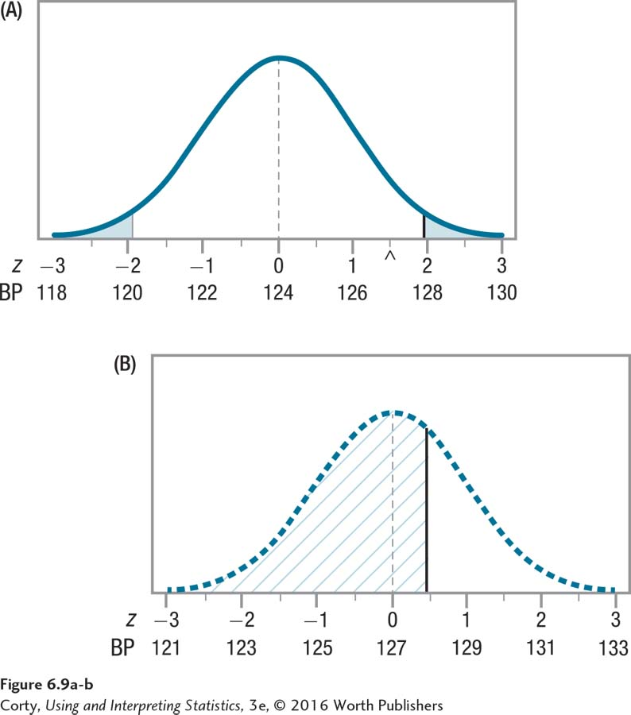

Figure 1.14: Figure 6.9 The Probability of Type II Error (Beta) if μ = 127 This figure is the same as Figure 6.8, but the area to the left of the solid vertical line in the bottom panel (B) has been hatched in. Note that the solid vertical line is directly below the critical value of z, 1.96, in the top panel (A). Any sample mean that falls in the hatched area of the bottom panel would fall in the common zone of the top panel, and the null hypothesis would not be rejected. But, as the bottom distribution has a population mean of 127, not 124, the null hypothesis of μ = 124 should be rejected. Note that more than half of the distribution is shaded in, meaning there is a large probability of Type II error if we hypothesize μ = 124 but the population mean is really 127.